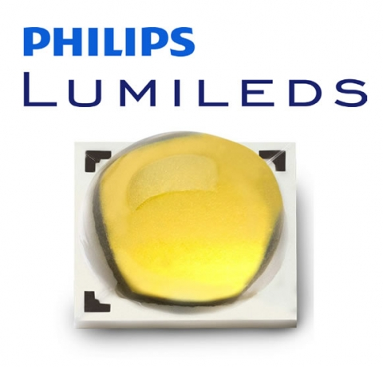
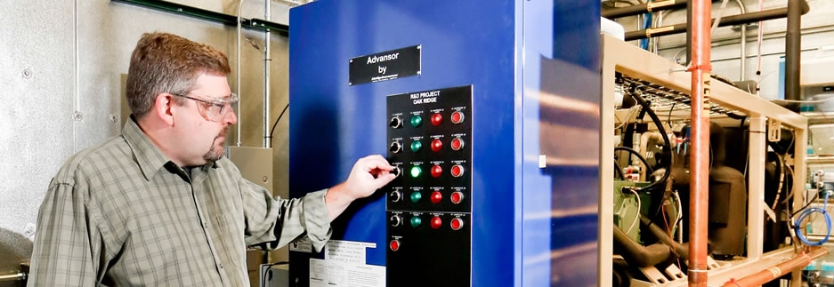
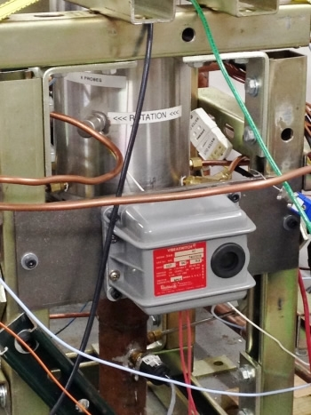
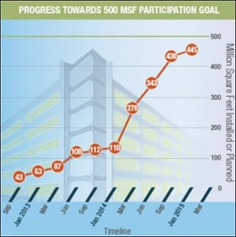
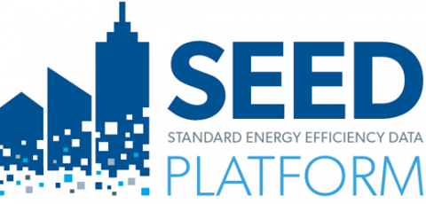
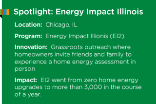
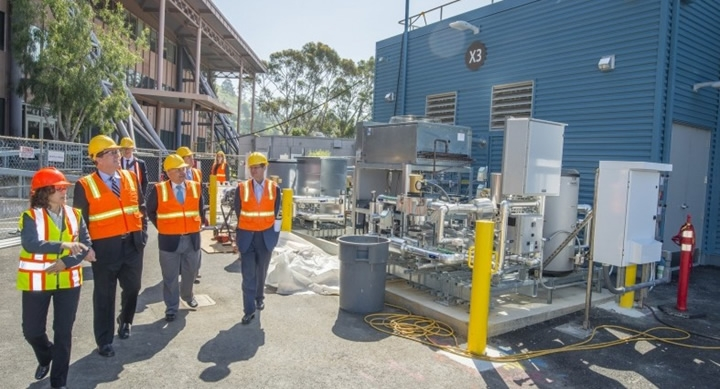
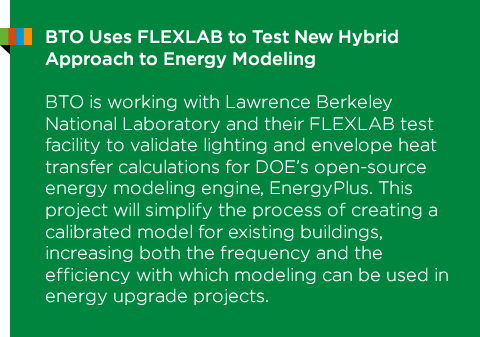
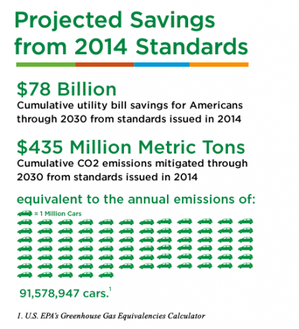
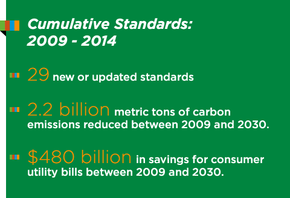

Table of Contents
- Feature Story: LEDs Make Rapid Inroads in Market
- Research & Development of Emerging Technologies
- Making a Difference in the Marketplace
- University Partnerships Inspire Next Generation of Building Professionals
- Cutting Edge Research Facilities
- Locking-In Energy Savings in 2014
- Employee Profile: John Cymbalsky
- Looking Ahead
Download PDF version »
Dear Reader,
 Now that we are full swing into 2015, we would like to reflect on our accomplishments from the past year, while also looking ahead to 2016. First, I would like to thank our partners, staff, and stakeholders for making 2014 a banner year. Continuing our commitment to the clean energy economy, we saw major advancements in light-emitting diode (LED) and refrigeration technology, spurred the market to adopt energy efficient solutions through industry partnerships and home retrofit campaigns, and developed 10 final efficiency standards for appliances and equipment that will lock in energy savings for years to come.
Now that we are full swing into 2015, we would like to reflect on our accomplishments from the past year, while also looking ahead to 2016. First, I would like to thank our partners, staff, and stakeholders for making 2014 a banner year. Continuing our commitment to the clean energy economy, we saw major advancements in light-emitting diode (LED) and refrigeration technology, spurred the market to adopt energy efficient solutions through industry partnerships and home retrofit campaigns, and developed 10 final efficiency standards for appliances and equipment that will lock in energy savings for years to come.
Our research with national labs, industry, and universities is pushing the limits of new materials and manufacturing methods to advance cost-effective building technologies and systems. In 2014, these efforts led to breakthroughs in heat pump superchargers for cold climates, advanced supermarket refrigeration systems, and LEDs.
LED lighting is one of today’s most energy efficient and rapidly developing technologies. In 2014, LED technology continued to advance at a rapid pace, making major inroads in the market because of improved efficacy and lower manufacturing costs. The savings from LEDs are just starting, though—over the next two decades, the United States could save $250 billion in energy costs by switching entirely to LEDs.
To realize those benefits, businesses and homeowners often need guidance to help them best utilize these new technologies. That’s where BTO comes in. For example, our campaign to assist facility owners in installing state-of-the-art lighting in parking lots across the nation has resulted in nearly 445 million square feet of parking space retrofitted with efficient lighting.
We also celebrated a major milestone from the Better Buildings Neighborhood Program, which established energy efficiency programs in communities across the U.S. In just four years, this Recovery Act initiative made energy efficient upgrades to over 100,000 homes and buildings across the nation.
All of this work leads to the essential step of informing our appliance and equipment efficiency standards. Today, our Appliance and Equipment Standards Program sets standards for products that cover nearly 90% of home energy use and 60% of commercial building energy use. Standards set in 2014 will lead to $65 billion in energy savings for consumers and businesses, and mitigate 365 million metric tons of CO2 through 2030.
Through investments at the early stages of technology development; targeted market transformation activities; efficiency standards; and partnerships with our national labs, industry, and universities, the Building Technologies Office is helping lay the foundation for more efficient homes and buildings.
Thank you for your part in these accomplishments.
- Roland Risser,
Director, Building Technologies Office
Today, LEDs illuminate our homes and offices, make our streets and parking lots brighter and safer, and fill our retail shelves. Homeowners and businesses are making the switch to solid-state lighting at an ever-faster pace, as product costs fall and performance keeps improving. The result: Americans are saving hundreds of millions of dollars in energy costs, while reducing carbon emissions and making our nation less dependent on fossil-fuel generated power.

LEDs Transforming Lighting Market at Rapid Pace
Over the past decade, BTO’s strategic investments and diverse partnerships have helped make the United States the epicenter of solid-state lighting innovation. We have seen especially rapid improvements in LED efficacy (increasing by 50% since 2010) and manufacturing costs have reduced at a record pace (from $150/kilolumen in 2008 to $15/kilolumen today). These factors have spurred an unprecedented transformation in the market. The LED’s predecessor, compact fluorescents (CFLs), had reached a market share of less than 0.1% after six years on the market. In that same amount of time, LEDs increased their market share to more than 4%. As of 2013, more than 34 million LED products had been installed, 90 times that of 2009.
LED products yielded about $2.8 billion in energy savings for the United States over the past 11 years—a remarkable return on the total U.S. Department of Energy (DOE) Solid-State Lighting Program investment of about $300 million over that same period. DOE has set a high bar for solid-state lighting in the next decade, challenging the industry with aggressive “reach” goals for efficacy and performance, and cultivating the climate of innovation essential to new solid-state lighting-related business and job creation in the United States.
DOE-Supported Scientist Receives Nobel Prize for Blue Light LEDs
Three scientists, Isamu Akasaki, Hiroshi Amano and Shuji Nakamura—two from Japan and one from the United States—received the 2014 Nobel Prize in physics for their work on LEDs. The team earned the prestigious award specifically for their invention of the blue light emitting diode, a game-changer in the history of LED lights.
The American scientist, Shuji Nakamura, is a pioneer in the lighting industry and founder of the LED company Soraa. Soraa has worked with the DOE—both through BTO and DOE’s Advanced Research Projects Agency-Energy (ARPA-E)—on the subject of blue light emitting diodes, which make the white light coming from today’s LED light bulbs possible. When granting the award, the Nobel committee said that LED light bulbs “hold great promise for increasing the quality of life for over 1.5 billion people around the world who lack access to electricity grids.”

Philips Lumileds Lowers LED Manufacturing Costs to Record 150 lm/$
High manufacturing cost is one of the primary barriers to LED adoption in the market. The Philips Lumileds LUXEON TX LED package, pictured above, lowered solid-state lighting manufacturing costs to a record 150 lumens per dollar (lm/$) in 2014, surpassing the previous record of 115 lm/$. Representing the next rung on the evolutionary ladder of the Lumileds product family, the LUXEON TX offers extreme efficacy and an industry-lowest production cost. Even with these successes, the vast majority of solid-state lighting’s savings are yet to come. In the best case scenario, annual energy cost savings from solid-state lighting could eventually reach $39 billion.


New Advanced Refrigeration Technology Provides Clean Energy, Low Utility Bills for Supermarkets
Refrigeration systems at your local grocery store have seen significant improvements in energy efficiency over the years. But because refrigeration systems are constantly running, they still use massive amounts of electricity and are a major expenditure for supermarkets. In addition, standard refrigerators still rely on refrigerants that leak into the atmosphere and contribute to global warming. The most common of these are hydrofluorocarbons, or HFCs, a significant greenhouse gas.
This past year, Oak Ridge National Laboratory (ORNL) and leading refrigeration systems manufacturer Hillphoenix partnered to develop a supermarket refrigeration system that uses no hydrofluorocarbons—a major industry breakthrough. In place of HFCs, Hillphoenix’s system uses CO2 as its refrigerant, which, perhaps surprisingly, is 4,000 times less potent than HFCs. After conducting experiments in ORNL’s commercial refrigeration laboratory, Brian Fricke (pictured above) and his colleagues resolved the remaining technical hurdles to replace the use of HFCs with CO2 through an advanced gas compression system.
Titled the Second Nature Advansor System, Hillphoenix’s technology not only reduces greenhouse gas emissions by 78% compared to existing systems, it also lowers energy consumption by 25%. The technology’s energy savings potential means there is a great chance it will see widespread adoption in grocery stores across the country. In fact, this system already has 12 installations in the United States. BTO and ORNL are continuing their partnership to pursue further advanced gas compression systems and even next generation non-vapor compression refrigeration technologies, which use no refrigerants and produce zero greenhouse gas emissions.
Small Business Spotlight: Mechanical Solutions Transforms the Cold-Climate Heating Market
More than 97 million Americans live in cold climate regions, where heating their homes is a primary concern for many months of the year. Traditionally, these homeowners have used furnaces and boilers to heat their homes, and they have not been able to take advantage of new, very efficient heat pumps.
Through a Small Business Innovation Research award, Mechanical Solutions, Inc., designed and developed a “Supercharger” that will enable heat pumps to efficiently operate across the entire United States, including in cold-weather climate zones. The “Supercharger” pre-compresses the cooling refrigerant before it reaches the traditional compressor which is, historically, unreliable in cold outdoor temperatures. The concept is similar to superchargers for piston engine aircrafts, which must maintain effectiveness with cooler temperatures at high altitudes.
Mechanical Solutions’ new technology provides familes nationwide access to this efficient, single heating and cooling source for their home.
Energy Efficient Lighting Campaign Slashes Energy Use, Significantly Upgrades Parking Facilities
Lighting U.S. parking lots and garages costs building owners more than $6 billion every year and accounts for nearly 1% of all energy used in the country. Building owners could reduce energy use and save money if these structures were upgraded to the most efficient lighting solutions, which can last 2-5 times longer than traditional outdoor lights.
DOE’s Better Buildings Alliance partners with industry organizations to help businesses adopt such state-of-the-art technologies. One such effort is the Lighting Energy Efficiency in Parking (LEEP) Campaign, through which we offer free guidance and recognition to facility owners who implement energy efficient lighting solutions in their parking facilities.
The LEEP Campaign reached a tipping point in 2014, recruiting more than 120 businesses and organizations to retrofit nearly 445 million square feet of parking space with energy efficient lighting. (See figure at right.)
These businesses and organizations have upgraded their facilities to high efficiency metal halide, fluorescent, and LED solutions that can last three times longer than their previous technology. And by using lighting controls, the businesses and organizations are able to reduce energy needs when parking facilities are not in use. These systems pay for themselves quickly by cutting energy costs up to 70% and maintenance costs up to 90%.
Collectively, LEEP participants are saving more than $10 million and 120 million kilowatt-hours of energy annually. The associated greenhouse gas reductions equate to taking 17,000 cars off the road every year.
The energy savings, market adoption, and low installation costs seen by partners inspired Pacific Northwest National Laboratory to propose a change to ASHRAE’s 90.1 code, the most influential energy code in the industry. The proposal recommends improving the efficiency of exterior lighting by 30% compared to existing code. This change is estimated to save 0.241 quads annually with full market turnover, or roughly 26% of the total energy consumption in commercial lighting.
Accomplishments to Date
The LEEP campaign reached a tipping point in 2014, recruiting commitments from over 100 businesses and organizations to retrofit nearly 445 million square feet of parking space with energy efficient lighting. (See figure to the right.)

These businesses and organizations have upgraded their facilities to high efficiency metal halide, fluorescent, and LED solutions that last three times longer than their previous technology. And by using lighting controls, they are able to reduce energy needs when parking facilities are not in use.
Collectively, LEEP Participants are saving over 120 million kilowatt-hours of energy and over $10 million annually.
By 2030, participants are expected to reach $150 billion in cumulative savings, and reduce carbon emissions by 600 million metric tons.
The energy savings seen by partners— sometimes up to 90 percent—inspired Pacific Northwest National Laboratory to propose a change to ASHRAE’s 90.1 code, the most influential energy code in the industry. This change is estimated to save 0.241 quads annually, or roughly 26 percent of the total energy consumption in commercial lighting. The 90.1 proposal represents a savings boost of 30 percent compared to the previous code, and even greater savings on the many older bulbs that are still actively in use.
 “house party” initiative was one of several innovative models proven by the more than 40 Better Buildings Neighborhood Program partners to create demand for home energy upgrades. Photo courtesy of Dan Olson, EI2")
Neighborhood Initiative Upgrades 100,000 Homes, Saves Families $730 Million
In hundreds of communities all across the country, DOE’s Better Buildings Neighborhood Program (BBNP) has spurred an energy efficiency transformation. In fact, in just four years, BBNP helped more than 100,000 homeowners and business owners save a collective $730 million on their utility bills through building energy upgrades.
Created in 2010, BBNP started as a $486 million investment of Recovery Act funding for more than 40 state and local governments to create community-based programs for improving energy efficiency. By collaborating with local nonprofits, financial institutions, building efficiency experts and utilities, these programs made it easier for consumers to access skilled energy efficiency professionals and obtain affordable loans for upgrades.
The initial federal investment leveraged $1 billion in other public and private sector funding and supported more than $740 million in direct contracts to local workers for energy assessments and upgrades.
BBNP concluded in 2014, but because these programs were created to be self-sustaining, many of our local partner organizations have continued on, and many have even joined the new Better Buildings Residential Network, a voluntary network that connects energy efficiency programs from across the country.
Additionally, we compiled the successes of our partner orgnizations in the publicly accessible Better Buildings Residential Program Solution Center, which launched in 2014, and provides step-by-step guidance for designing and implementing a residential energy efficiency program.
SEED Platform Launch Brings Big Energy Data to Cities

A major barrier in the building energy efficiency market is that energy data is located in decentralized locations and in different formats. This makes it hard for decision makers to predict savings that would result from energy upgrades, or implement effective energy efficiency policies and programs.

BTO is addressing this market barrier by developing the Standard Energy Efficiency Data (SEED) PlatformTM, a software tool that gives cities their own centralized database to manage data across their building portfolio. By improving the quality and availability of building energy data, this software helps cities demonstrate the economic and environmental benefits of energy efficiency.
The SEED Platform, which is free and open source, released its first version in 2014. Shortly after, six cities—Boston, New York, Philadelphia, Washington, D.C., Los Angeles, and San Francisco—announced that they will use the data platform to manage their building energy data and track compliance with state and local energy efficiency initiatives, such as benchmarking and disclosure policies.
With the SEED Platform, state and local governments, along with large portfolio owners, energy efficiency programs, and energy efficiency service providers, can more easily analyze energy data, target investment activities, and implement building benchmarking and reporting regulations. These organizations can now spend significantly less time processing data, and more time focusing on energy efficiency improvements.

The Race to Zero: Designing the Next Generation Home
Each year, thousands of college and university students major in construction-related fields, including architecture, engineering and construction management. These students enter into a competitive workforce that is increasingly demanding advanced knowledge and skills essential to delivering high-performance homes and buildings.
In the residential sector, industry is trending toward constructing more energy efficient homes that offer improved air quality, comfort and greater durability. In response, building codes are constantly increasing in rigor and consumers are expecting more options that can help them improve a home’s energy performance.
Right now, there is a need to develop cost-effective designs that are at least 40%-50% more efficient than a standard new home. These homes are so energy efficient they can cost-effectively offset all or most of their annual energy consumption with renewable energy, such as solar.
To support this increased demand, BTO is helping to develop a strong workforce—including direct entry workers, recent college graduates, and those in continuing education—with core competencies in building science through a number of high-impact initiatives and programs, such as the Guidelines for Home Energy Professionals, Solar Decathlon, and the recent Challenge Home Student Design Competition.
Last year’s inaugural Challenge Home Student Design Competition (now named the Race to Zero Student Design Competition) featured 28 collegiate teams that sought to develop plans for cost-effective zero energy ready homes for mainstream builders. The teams’ submissions, which included design/construction packages, project plans, and reports on required analyses, were judged by a panel of industry experts. Each team included students and advisors. Teams were encouraged to be multidisciplinary in nature and to work with professionals in the industry (such as a homebuilder) to help inform their decision making.
The grand winners were Montage Builders Northern Forest (a team comprised of students from the State University of New York – Environmental Science and Forestry, Syracuse University, and Onondaga Community College) and Ryerson University of Toronto, Canada. Their homes featured energy performance that significantly reduced usage while also offsetting the remainder with renewable energy.
The competition is set to return in April 2015.
Department to Hold 7th Solar Decathlon
In October 2015, 17 teams will meet in Irvine, California to design, build, and operate solar-powered houses that blend affordability, consumer appeal, and design excellence with optimal energy production and maximum efficiency.
After a hugely successful stint with support from the Building Technologies Office, the Solar Decathlon is moving to the Office of Energy Efficiency and Renewable Energy’s (EERE’s) Strategic Programs, where it will be expanded to cover the breadth of EERE technologies.

New, One-of-a-Kind FLEXLAB Opens, Allows for Integrated “Plug and Play” Testing of Commercial Buildings
In July 2014, the Energy Department’s Lawrence Berkeley National Laboratory, with funding from BTO, opened its one-of-a-kind test facility, equipped to evaluate the energy efficiency of commercial buildings on an entirely customizable, configurable platform, under real-world conditions.

The Facility for Low Energy Experiments in Buildings, better known as FLEXLAB, fills a critical hole in the industry—the ability to validate and provide highly accurate data on technologies as they operate in unison, informing building projects before they start. It is the only facility in the world that allows researchers and industry to experiment with full-scale outdoor integrated building systems, such as lighting, heating, and cooling systems, in a fully reconfigurable “plug and play” space.
The unique facility consists of four large test beds, each designed as small office buildings fitted with parts that can easily be swapped out depending on what type of experiment is being conducted. One test bed rotates 270 degrees, which enables researchers to study how building energy use and environmental parameters change with solar conditions. Testers can easily compare technologies by swapping out windows, walls, lighting, HVAC systems, and other architectural elements—they can even add or remove occupants to determine user comfort.
Through FLEXLAB, construction firms like California-based Webcor Builder, and others in the industry, will be able to design and test mock-ups of innovative designs before building them, bringing transformative and energy-efficient technologies to market faster. This will ultimately benefit consumers, by enabling buildings that are better designed and operated for comfort and lower energy costs.
DOE Finalizes Standards for Appliances in 2014 That Will Save $78B by 2030

Appliance and Equipment Standards Program has driven remarkable gains in the energy efficiency of household appliances and equipment, saving billions on consumer energy bills. The appliances and equipment covered by legislation provide services that consumers and businesses use every day, such as space heating and cooling, refrigeration, cooking, clothes washing and drying, and lighting.
Before each of these standards are issued, DOE provides the public, including industry and consumer and environmental advocates, an opportunity to participate in meetings and discuss the proposed standard. Bringing these diverse stakeholders together has led to an increase in the number of standards issued.
In 2014, DOE issued 10 final energy efficiency standards and coordinated a voluntary industry agreement for set-top boxes. In total, they are projected to reduce harmful carbon pollution by 435 million metrics tons—equivalent to the annual electricity use of nearly than 91 million cars—and save businesses $78 billion on utility bills through 2030.
Two standards that are projected to have some of the largest savings were for electric motors and walk-in coolers and freezers. Electric motors are used extensively in a variety of applications, such as industrial machines, conveyor belts and escalators. Last year, approximately 5 million electric motors were shipped in the United States. The new standard will save consumers nearly $16 billion and prevent 96 million metric tons of CO2 through 2030. The standard for walk-in coolers and freezers, such as the milk display at the supermarket, will cut energy bills by nearly $10 billion and reduce CO2 emissions by 62 million metric tons through 2030.
Efficiency Expert Nominated for American Service Award
Energy efficiency is the low hanging fruit of clean energy—something everyone can agree on. Here at BTO, the Appliance and Equipment Standards Program works to save American consumers money, while reducing energy use and greenhouse gas emissions, by overseeing minimum energy conservation standards for 60 categories of appliances and equipment.

Thanks to these standards implemented between 2009 - 2014, Americans will save $480 billion on their utility bills, and carbon dioxide emissions will be reduced by 2.2 billion tons, which is the same as eliminating the greenhouse gas emissions from 655 million cars.
John Cymbalsky, who has led these efforts since 2010, was recently recognized as a finalist for the 2014 Science and Environment Medal as part of the Samuel J. Heyman Service to America Medals program, commonly known as the Sammies. The Sammies are presented annually to federal employees who have made significant contributions to our country through their work as public servants. Honorees are chosen based on their dedication and innovation, as the impact of their work in addressing the needs of our nation.
Since his arrival at BTO, Cymbalsky has been busy. In fact, since January 2009, BTO has created or updated 29 new appliance standards. Much of this success comes from Cymbalsky’s ability to build a consensus between industry and consumer and environmental advocates, reaching negotiated agreements that take all sides into account. When asked about his nomination, Cymbalsky said “At the end of the day, the energy, money, and environmental savings achieved by energy conservation standards is what motivates all of us to achieve such great results. We will continue to build on this success and bring even greater savings to the American people as we continue work with our stakeholders on strengthening our energy conservation standards in the future.”
“It is quite an honor to be nominated as a finalist for a Sammie award. The nomination represents the hard work of an entire team of engineers, economists, and lawyers who truly care about the success of the program,” he added.
“John truly embodies the EERE spirit of excellence in the phenomenal work he does for the nation every day.”
- David Danielson, Assistant Secretary, DOE
Cymbalsky has a history of service in the clean energy space. Prior to joining BTO in 2010, Cymbalsky worked at the U.S. Energy Information Administration for more than 20 years, where he was responsible for the development of the National Energy Modeling System’s Residential Energy Demand Module. He has also participated in and authored many studies related to energy efficiency and various policies impacting residential sector energy use.


As we look forward to 2015 and beyond, new opportunities and challenges are emerging as the requirements of our built environment evolve. While we will continue to advance our core technologies and programs, we are also addressing three emerging focus areas to promote the clean energy economy: (1) integrating our buildings with the grid through an interoperable control platform, (2) manufacturing advanced building envelope and refrigeration materials, and (3) developing solutions to advance the housing industry and improve energy codes.
Buildings-to-Grid Integration
The introduction of smart sensing, metering, and control technology is transforming the nature of our power system from end to end. However, these technologies have not yet been fully integrated in the system that connects our energy grid and buildings. To enable buildings to provide new services to owners and the grid, a new, “transactive” approach to energy is needed that will allow the millions of sensors, meters, smart appliances, loads, and distributed generation to seamlessly communicate and coordinate.
Our Buildings-to-Grid Initiative is addressing the need for this “transactive” approach by engaging utilities, industry, and government stakeholders to establish a uniform strategy for data standards and interoperability. Specifically, we are developing a framework for transaction-based energy systems, characterization of building end uses, and the opportunities these systems bring to the larger energy sphere. We are also investing in VOLTTRON™, an open source control and coordination platform that DOE is developing as a common platform for control. VOLTTRON enables developers to quickly build secure applications and agents that can unlock more value from building devices through the delivery of end-use services, grid services, and energy market services.
Advanced Building Envelope and Refrigeration Materials R&D
As part of DOE’s Clean Energy Manufacturing Initiative and in support of the Materials Genome Initiative, BTO will announce a new initiative in fiscal year 2016 in advanced building materials research and development. The initiative will seek to capitalize on advances in high-performance computing and high-throughput experimental techniques to rapidly design new and improved materials for non-vapor-compression refrigeration systems and high-performance envelope materials.
Potential applications resulting from these materials include advanced magnetocaloric refrigeration; visibly transparent insulating films for windows; high-performance, moisture-tolerant insulation for building retrofits; thermally insulating membranes that can be activated to remove water and CO2; building envelopes with integrated sensors; and adsorption or absorption materials to control gas flow through the building envelope.
Building America Targets Solutions for Moisture Management, Indoor Air Quality, and Optimized Comfort
Our Building America program is providing the research needed to transform our new and existing homes to be zero energy ready. The program has identified three areas of emphasis that target existing research gaps, energy savings potential, and market needs:
- Water Managed High Performance Enclosures that manage moisture risks leading to mold, durability, or indoor air quality issues.
- Smarter Indoor Air Quality Systems that ensure contaminants don’t impose significant health risks.
- Optimized Comfort Systems for High Performance Homes that reduce the humidity and comfort risks due to reduced air flow and longer swing seasons.